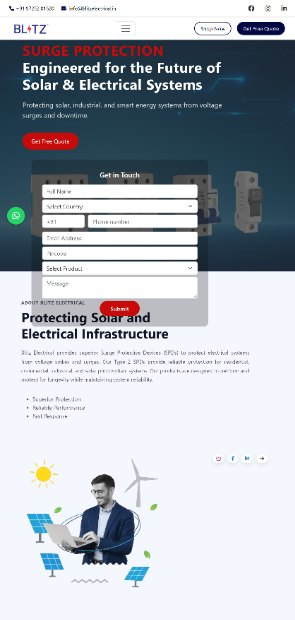
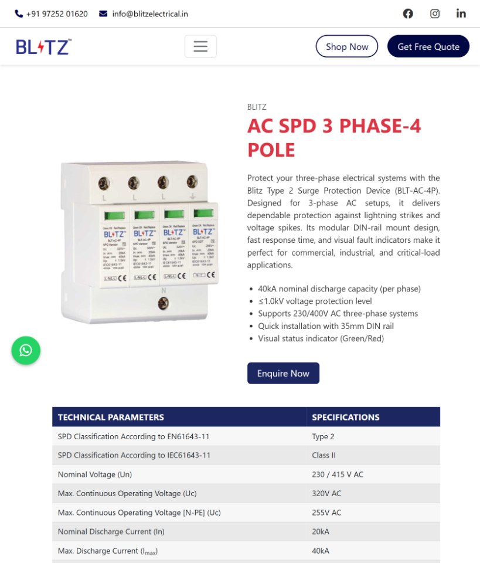
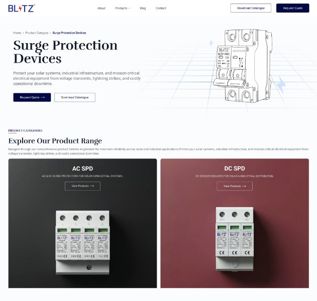
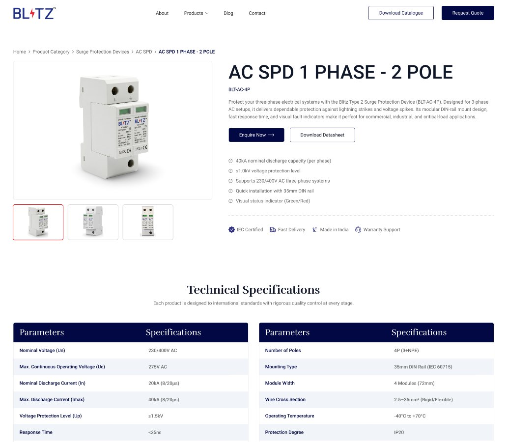
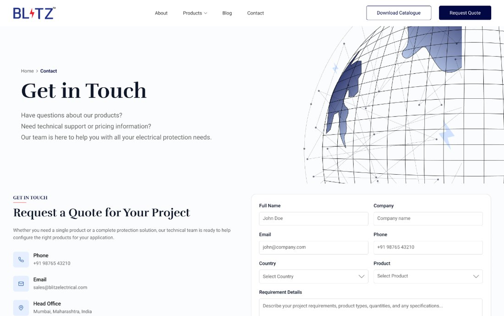
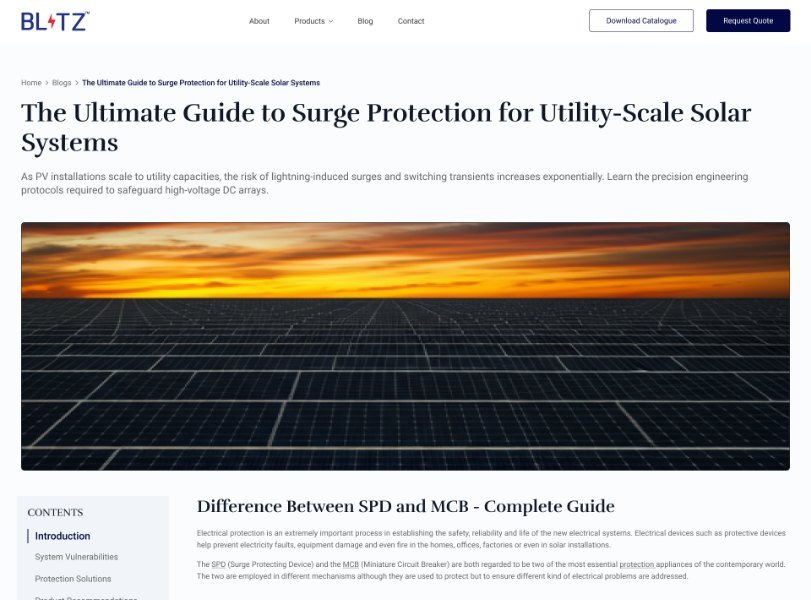

01 / DISCOVER⌕
“Which product family matches my application?”
Illustrative visitor: Installer or project engineer exploring surge protection options.
NeedCategories, applications, clear next steps
Reimagining Blitz Electrical’s digital experience to make technical products easier to explore, the brand easier to trust, and every enquiry easier to begin.

Blitz operates in a category where decisions are technical, purchase journeys are considered, and credibility matters.
The website redesign set out to bridge engineering-grade product information with a modern browsing experience. Instead of making visitors work through scattered content, the new structure brings product categories, technical details, trust signals, and enquiry pathways into one coherent journey.
What if a highly technical brand could feel just as clear and considered as the products it protects?
From a dated, information-heavy experience to a structured, professional product discovery and enquiry website.
An audit of the provided legacy screens highlighted opportunities to improve hierarchy, browseability and buyer confidence.


Headlines, content, technical details and enquiry prompts did not always have a clear visual sequence.
Finding the right protection type required more interpretation than a category-led catalogue should.
Product information existed, but its presentation could do more to communicate precision and trust.
Quote and contact actions could become more visible, predictable, and contextual across pages.
These are design observations from supplied screenshots, not findings from a formal usability study.
Before shaping pages, it helps to frame what a visitor is trying to do. These are plausible task scenarios—not interview-backed personas.
In technical B2B browsing, visitors often move between discovery, evaluation and action. The redesign can support all three without making every page feel like a catalogue.
Illustrative visitor: Installer or project engineer exploring surge protection options.
Illustrative visitor: Engineer comparing ratings, standards and specifications.
Illustrative visitor: Buyer or procurement lead ready to contact the brand.
Make the product easier to discover, the information easier to understand, and the decision to enquire easier to take.
Organise products around clear entry points and recognisable protection categories.
Surface specifications, certifications and information that support technical evaluation.
Bring quote actions into product and contact journeys without disrupting exploration.
Support search-driven learning with clear educational pages and well-structured content.
High-level sitemap reconstructed from the redesigned website navigation and page types
The redesign makes space for buyers who know what they need and visitors who are still learning.
An easy-to-follow route from the homepage to a category, a specification-rich product detail page and a relevant enquiry action.
Explore simplified wireframe reconstructions next to real redesigned screenshots. Change the page and viewport to see the intended hierarchy.
Establish what the company protects, provide a product-family entry point, then layer in proof and a quote action. The goal is to make the next click feel obvious.
Process transparency: These grayscale wireframes are reconstructed explanations of layout decisions, not archived original design files or evidence of a documented prototyping sequence. The adjacent images are supplied redesigned screens.
A closer look at the core page types and the reasoning behind their layout, content and interactions.
The new homepage introduces a clear promise, then guides visitors into the product ecosystem. Supporting sections give buyers reasons to trust the brand before asking for action.

Focused landing pages organise technical product families into simpler choices. Product types are visually separated, allowing people to browse by need before digging into specifications.

The product page treats specifications as part of the experience, not an afterthought. Product images, important features, datasheet access and structured technical tables support a more informed decision.

Rather than leaving visitors uncertain about where to go, the redesigned contact page brings project and enquiry details into a clearer form, supported by reassuring context and accessible contact options.

Industry-relevant articles turn technical knowledge into useful content. More structured articles can support product understanding, brand authority and discoverability through search.
Choose a screen, then select the numbered hotspots to uncover the problem each design decision addresses.
Select a numbered dot to explore a design decision. Real project screenshot
An explicit category introduction reduces uncertainty about where different protection solutions live.
Drag across the product screen to compare the supplied legacy page with its redesigned counterpart.
Use the slider or arrow keys · Visual comparison only
The resulting UI balances a technical industry with more refined typography, generous spacing and a confident visual hierarchy.
A small palette keeps the pages consistent and the calls to action easy to find.
A display serif and clean interface sans pairing used in this presentation.
A considered redesign creates a clearer path for visitors and a better basis for search, engagement and enquiries.
Google Search Console · Three-month window referenced in earlier case-study materials
The experience now gives visitors clearer category entry points, more understandable product pages and more direct ways to ask about the right solution.
Evidence note: The screenshots document visual and structural changes. The 535 clicks and 15.9K impressions come from the prior case-study materials; underlying Search Console data has not been verified here. Enquiry conversion, bounce rate, user satisfaction and attributed SEO uplift should not be claimed without analytics or research data.
Reported Google Search Console totals are useful as a snapshot. They don't, on their own, establish a before-and-after uplift or quote conversion.
Reported three-month search window in previous project material.
Approximate click-through rate
535 clicks ÷ about 15,900 impressions
Not measured in the available evidence. Tracking successful form submissions is an important next step.
Qualitative mapping from visible page functions, not a measured performance score.
| Page type | Discover | Evaluate | Enquire |
|---|---|---|---|
| Homepage | ●Category entry | ●Brand proof | ●Quote CTA |
| Category page | ●Browse families | ◐Context | ●Quote CTA |
| Product detail | ◐Breadcrumbs | ●Specifications | ●Enquiry CTA |
| Educational blog | ●Search intent | ●Explainers | ◐Follow-on path |
| Contact | ◐Support info | ◐Contact detail | ●Request form |
Data provenance: 535 clicks and 15.9K impressions appear in previous case-study materials, but the original Search Console export and date range were not independently verified. CTR is calculated from the rounded total. No monthly trend, enquiry-growth claim, conversion rate or statistically tested outcome is fabricated.
Mobile design changes more than column count: reading order, tap targets, product emphasis and form structure have to remain coherent.
Preserve a clear contact or enquiry route without forcing additional navigation.
Headline first, then product context, benefits, technical detail and supporting content.
Use readable specifications and mobile-friendly tables rather than shrinking everything.
These responsive diagrams are illustrative design studies rather than production screenshots or proof of device-level QA.
A polished release is not the end of product thinking. It should make future measurement and iteration more focused.
Track product-to-form clicks, form starts, successful submissions and attributed enquiry sources. Connect the forms to meaningful CRM outcomes when feasible.
Give participants a realistic protection requirement and ask them to locate a matching product family and verify one technical specification.
Prototype side-by-side technical comparisons, then test whether buyers identify differences more accurately and efficiently.
Conduct keyboard-only review, screen-reader checks, color contrast tests, and mobile enquiry tasks on real devices before claiming compliance.
Good industrial UX doesn’t remove complexity. It reveals the right information at the right moment.
Technical audiences do not need a less detailed experience; they need a better organised one. Product grouping, context, specification hierarchy and strong navigation help useful information become accessible without compromising accuracy.
A good release is a foundation for iteration. The next round should be informed by real visitor behaviour and measured outcomes.
The Blitz redesign turns an industrial catalogue into a more coherent experience for finding, evaluating and enquiring about electrical protection products.